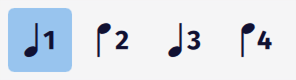
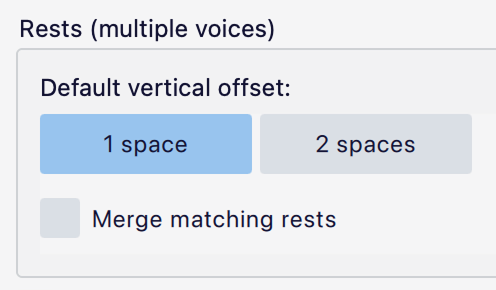
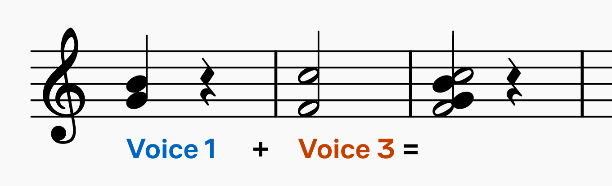
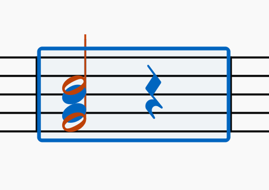
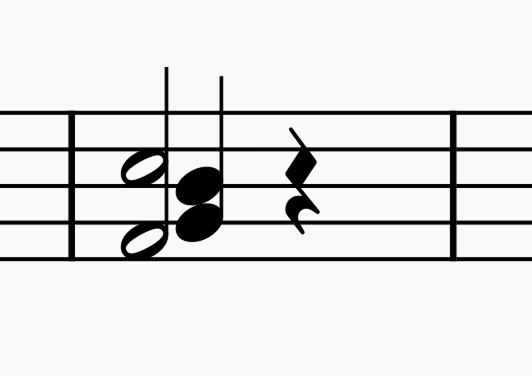
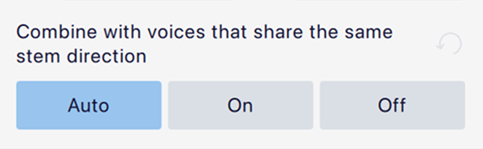

Working with multiple voices
Overview
In notation, a voice is a single line of music on a stave. It is possible to notate more than one voice, with independent rhythms, on a single stave. Two voices on the same stave are normally indicated using opposing stems – an upper voice with stems up and a lower voice with stems down:

In a four-part SATB arrangement on two staves, you would use voices 1 and 2 on the top stave for soprano and alto, and voices 1 and 2 on the bottom stave for tenor and bass:

The default voice when starting note entry is voice 1. When you need a second voice, normally this will be voice 2. Voices 3 and 4 are less frequently used, but are sometimes necessary in complex polyphonic music or for the inner parts in dense keyboard textures.
Entering music in multiple voices
The principles of entering notes and rests are the same regardless of which voice you are in (see entering-notes-and-rests.md).
Each voice has its own colour in the UI. The note entry cursor changes colour to reflect the current voice, and notes and rests (and many other items) will be highlighted in the colour of their respective voice when you select them. This is useful when inputting and editing as it gives you an immediate visual indicator of the voice the music belongs to.
You can change each voice's colour in **Preferences -> Advanced**.
While you are in note entry mode, you can switch to a different voice by clicking one of the voice selection buttons in the top toolbar:

You can also use the keyboard shortcuts Ctrl+Alt+1–4.
By default, only the buttons for voices 1 and 2 are shown in the toolbar. To use the others, first reveal them by clicking the cog button in the toolbar and then clicking the eye button next to **Voice 3** and **Voice 4** in the menu.
If you select a note or rest before entering note entry mode, you will enter note entry mode in the same voice as that note or rest.
Editing music in multiple voices
Moving notes between voices
To move notes or rests to another voice:
- Select the notes you’d like to move (individually, or as a list or range).
- Click the button for the voice in which you’d like them to be moved.
You can also use the shortcuts Ctrl+Alt+1–4 (Win) or Cmd+Alt+1–4 (Mac).
You can move any number of notes, even from multiple voices at once, into a voice. If there are notes at the same position with the same rhythm they will combine into chords. If there are differing rhythms, some notes may be left in their original voice as MuseScore Studio will not be able to know what you intend.
Exchanging voices
You can swap the music of any pair of voices by selecting one of the options from Tools -> Voices (e.g. Exchange voice 1-2). This only works with range selections, and on whole measures (or ranges of measures). If only part of a measure is included in the range, the whole measure will be swapped.
Adjusting rests
It is often necessary to remove redundant rests in secondary voices. This can be done in two ways:
- Hiding the rest, by selecting it and unchecking Visible in Properties (or using the shortcut
V). - Deleting the rest, by selecting it and pressing
Del.
Voice 1 is the 'reference' voice and must remain rhythmically complete. As such, rests in voice 1 can be hidden, but not deleted.
In a single voice, rests appear in the middle of the stave, but in multiple voices, rests for voice 1 are moved up at least one space and rests for voice 2 are moved down at least one space. This offset helps to show which voice they belong to. In practice, they are usually displaced further out to avoid colliding with notation in the other voice.
Where there are rests of the same duration in more than one voice simultaneously, MuseScore Studio can merge them together automatically:

Rests unmerged (left) and merged (right)
The behaviour of rests in multiple voices can be controlled using these options in Format -> Style -> Rests:

- Default vertical offset: Choose between 1 space and 2 spaces for the initial displacement of rests when in multiple voices.
- Merge matching rests: Merge rests of the same duration that occur simultaneously in more than one voice (see image above).
These options affect all staves in the scores. If you want to turn rest merging on or off for specific staves, you can do this via staff-part-properties.md:
- Right-click the stave and choose Stave/Part properties from the menu.
- Change Merge matching rests to On or Off. The default, Auto, will follow the score-wide setting.
'Merged' rests are actually overlaid on top of each other, but they are all still there. If you want to see more than one rest in a specific place you can achieve this by moving them manually.
Rests can also be moved manually like other items. Just select a rest and press Up or Down, or change Properties -> Appearance -> Offset.
Stem direction
When music is in a single voice, the direction of stems varies according to the vertical positions of the notes (see #default-stem-direction). When there is more than one voice, all music in voices 1 and 3 will have stems up, and all music in voices 2 and 4 will have stems down.
You can still change the stem direction of any notes by selecting them and pressing X (or pressing the Flip direction button in the note input toolbar).
When there are simultaneous notes on one stave in different voices but which have the same stem direction, MuseScore will combine them together so that it looks like they form a single chord, with a shared stem:

This is achieved by offsetting certain notes and overlaying the stems, but it is still actually two chords. If you want a different arrangement, it can be difficult to undo this. Therefore you can turn this behaviour off by unchecking Format -> Style -> Combine voices that share the same stem direction. This will, instead, simply overlay the two chords directly over each other:

This is not very beautiful, but it is a much simpler starting point from which you can manually offset the voices the way you need them, like this:

You can also control this for specific chords in the score via Properties (under Note -> Head -> Show more):

Playback
Note that it is not currently possible to assign different sounds or VSTs to different voices within the same instrument. If you need to do this, they must be separate instruments.